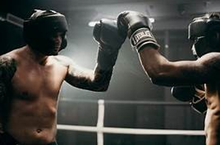

Bienvenidos al club de Boxeo Ippo.
Un nuevo club de boxeo recién fundado en el que buscamos iniciar a los más jóvenes a este deporte.
También queremos mejorar el nivel de aquellos que llevan un tiempo boxeando y estén preparados para
competir gracias a nuestros muy preparados entrenadores y preparadores. Tenemos tanto equipo masculino
como femenino. Nuestro club de boxeo permite a todos sus socios participar en combates oficiales de todo tipo de
categorías y edades. Lo que más buscamos es que se sigan los valores del deporte y el respeto, tanto para compañeros como rivales.